La ventana 9102 - Horas Extra es parte del módulo de Recursos Humanos del sistema,
desarrollado para Embutidos de Calidad S.A. Su función es registrar el tiempo que un empleado
trabajó después de terminar su jornada, calcular cuánto se le debe pagar por ese tiempo y
llevar la aprobación del jefe o supervisor.
La ventana se abre desde Asistencia con el botón Horas extra. Si en Asistencia había una fila
seleccionada, la ventana abre con esa asistencia lista para registrar su hora extra. Lo que
se aprueba aquí es lo que después toma Nómina para el pago.
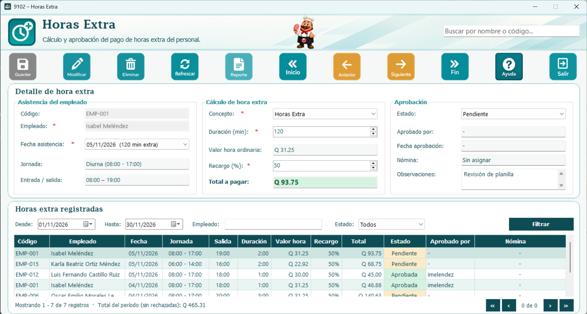
La ventana se divide en dos partes. A la izquierda está el Detalle de hora extra, con tres secciones:
1. Asistencia del empleado: código, nombre, fecha de la asistencia, jornada y hora de entrada y salida.
2. Cálculo de hora extra: concepto de pago, duración en minutos, valor de la hora ordinaria,
recargo y total a pagar.
3. Aprobación: estado, observaciones, quién aprobó o rechazó, la fecha y la nómina que tomó el pago.
A la derecha está la lista de Horas extra registradas con sus filtros. Al hacer clic sobre
cualquier fila, los datos de ese registro se cargan en el detalle, listos para consultarse o modificarse.
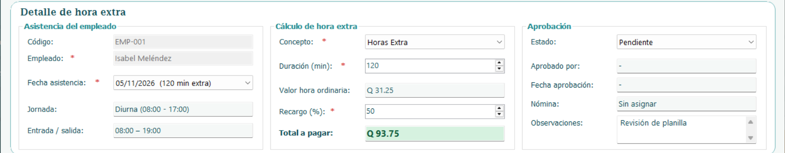
En el campo Fecha asistencia solo aparecen las asistencias del empleado que cumplen con todo esto:
1. El estado de la asistencia es Presente o Tardanza.
2. La hora de salida es después del fin de su jornada.
3. La fecha es antes de la baja del empleado, si tiene una.
4. Todavía no tiene una hora extra registrada.
Los días de permiso o vacaciones no generan hora extra porque su asistencia queda como Permiso.
Si el empleado no tiene ninguna asistencia que cumpla, el sistema lo indica debajo del campo.
A continuación se detallan los pasos:
1. Escriba el código o el nombre del empleado. Al encontrarlo, el resto de sus datos se llenan solos.
2. Seleccione la fecha de asistencia. Se muestran su jornada y su hora de entrada y salida.
3. Seleccione el concepto de pago.
4. La duración se llena sola con los minutos que trabajó después de su jornada; puede bajarla si
no se reconoce todo el tiempo.
5. Revise el recargo (50 % por defecto) y el total a pagar, que se calcula solo.
6. Deje el estado en Pendiente o cámbielo a Aprobada o Rechazada.
7. Presione el botón Guardar. El sistema mostrará un mensaje confirmando que la hora extra se guardó correctamente.
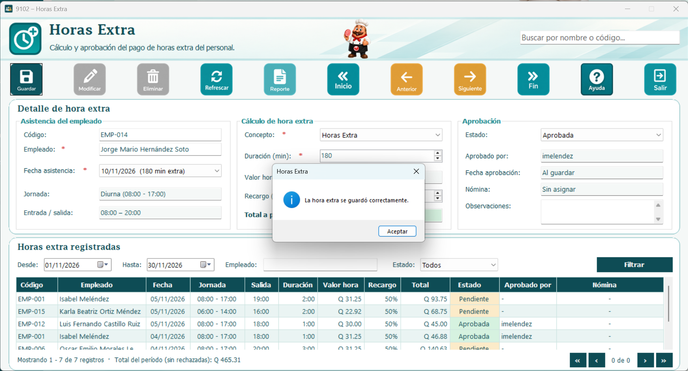
El cálculo sigue el Código de Trabajo de Guatemala:
1. Valor de la hora ordinaria: salario mensual del empleado / 30 / horas de su jornada. La jornada
diurna (entre 6:00 y 18:00) es de 8 horas, la mixta de 7 y la nocturna (entre 18:00 y 6:00) de 6.
Una jornada mixta con 4 horas o más de noche se toma como nocturna.
2. Total a pagar: (duración en minutos / 60) x valor de la hora x (1 + recargo).
3. El recargo mínimo es de 50 % sobre la hora ordinaria; puede subirse si la empresa paga más.
4. La jornada más las horas extra no pueden pasar de 12 horas en el día, por eso la duración
máxima es de 240 minutos en jornada diurna, 300 en mixta y 360 en nocturna.
Por ejemplo, un empleado de jornada diurna con salario de Q 4,500.00 tiene una hora ordinaria de
Q 18.75. Si trabajó 90 minutos extra con recargo de 50 %, se le pagan Q 42.19.
El salario se toma del registro del empleado. Si no tiene salario registrado, no se puede calcular
el valor de la hora y el sistema no deja guardar.
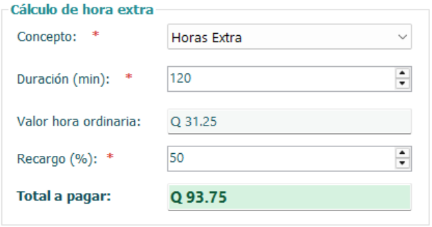
Cada hora extra tiene uno de los siguientes estados:
1. Pendiente: está registrada pero el jefe o supervisor todavía no la revisa.
2. Aprobada: se reconoce el pago y queda lista para que la tome Nómina.
3. Rechazada: no se paga. Es obligatorio escribir el motivo en observaciones.
4. Pagada: Nómina ya la tomó. Solo se puede consultar.
Al cambiar el estado a Aprobada o Rechazada, el sistema guarda quién lo hizo y la fecha. Si se
regresa a Pendiente, esos datos se limpian. Cuando Nómina toma el pago, se muestra en el campo
Nómina y el registro ya no se puede modificar ni eliminar.
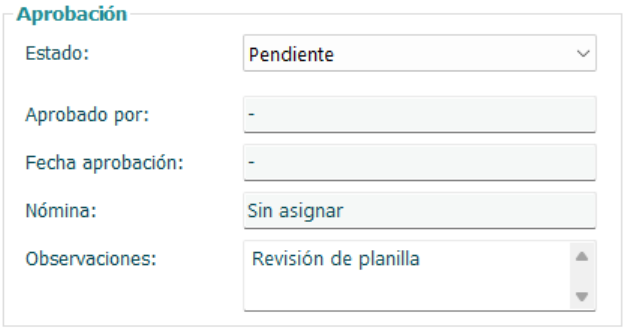
Antes de guardar o modificar, el sistema revisa los datos. Los campos con error se marcan
con un borde rojo y un mensaje debajo. No se permite guardar cuando:
1. No se ha seleccionado un empleado o la fecha de asistencia.
2. No se ha seleccionado el concepto de pago.
3. La duración es 0 o pasa de lo que trabajó después de su jornada o de las 12 horas en el día.
4. El empleado no tiene salario registrado.
5. No se ha seleccionado el estado, o el estado es Rechazada sin motivo en observaciones.
6. Las observaciones pasan de 255 caracteres.
Los campos marcados con asterisco (*) son obligatorios.
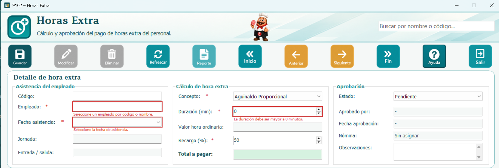
A continuación se detallan los pasos:
1. Seleccione en la tabla la fila de la hora extra que desea modificar.
2. Los datos se cargarán en el detalle.
3. Realice los cambios necesarios, por ejemplo la duración o el estado.
4. Presione el botón Modificar. El sistema mostrará un mensaje confirmando el cambio.
Una hora extra que ya tomó Nómina o que está Pagada no se puede modificar.
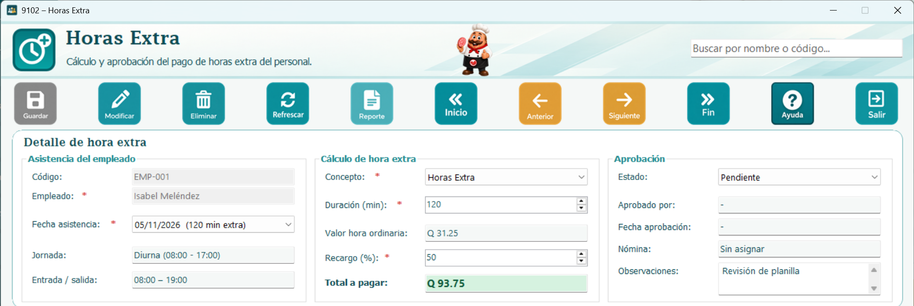
A continuación se detallan los pasos:
1. Seleccione en la tabla la fila de la hora extra que desea eliminar.
2. Presione el botón Eliminar.
3. El sistema pedirá confirmación, indicando el empleado y la fecha.
4. Al confirmar, el registro se elimina.
Una hora extra Aprobada no se elimina; si ya no aplica, cámbiela a Rechazada. Tampoco se puede
eliminar lo que ya tomó Nómina. Los botones Modificar y Eliminar solo se habilitan cuando hay un
registro seleccionado.
En la parte superior de la lista de horas extra puede filtrar los registros por:
1. Rango de fechas, con los campos Desde y Hasta.
2. Empleado, escribiendo su nombre o código.
3. Estado: Todos, Pendiente, Aprobada, Rechazada o Pagada.
Luego presione el botón Filtrar. También puede usar el cuadro de búsqueda rápida, que filtra
por nombre o código mientras escribe. Debajo de la tabla se muestra el total de registros
encontrados y la suma a pagar del período, sin contar las rechazadas.
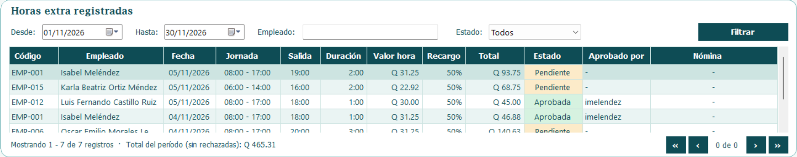
El botón Reporte abre el reporte de horas extra con los registros que la lista tiene filtrados en ese momento. Desde la ventana del reporte se puede imprimir o exportar.
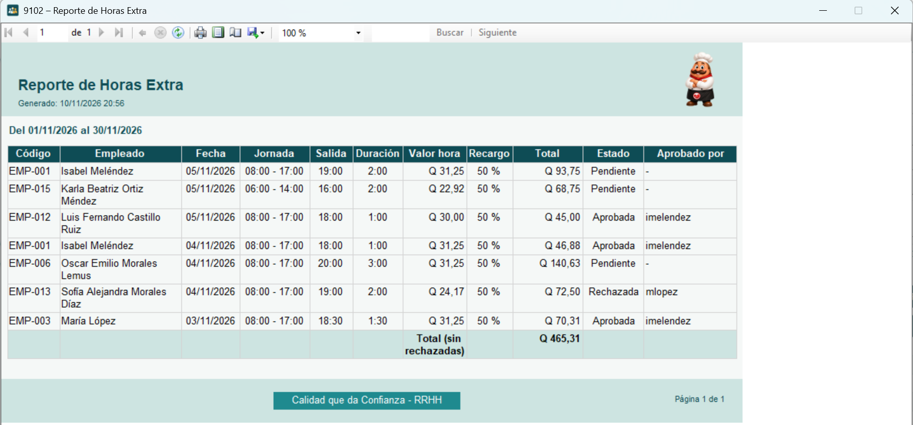
El formulario tiene el botón Refrescar, que limpia el detalle para un nuevo registro y vuelve
a cargar la lista, y los botones de navegación para desplazarse entre los registros de la tabla:
1. Inicio va al primer registro.
2. Anterior retrocede uno.
3. Siguiente avanza uno.
4. Fin va al último registro.
Al navegar, los datos del registro seleccionado se cargan en el detalle.
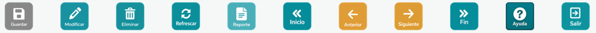
Para salir de la ventana de horas extra, presione el botón Salir o dé clic en la X que se encuentra en la parte superior derecha de la ventana. Si hay cambios sin guardar, el sistema pregunta antes de cerrar.
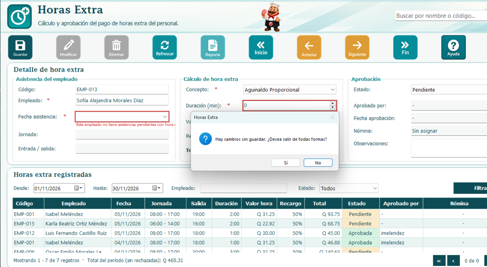